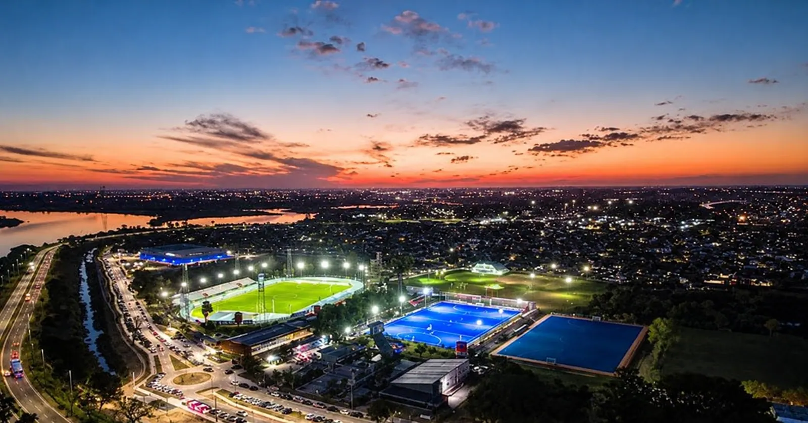

Le 12 septembre 2026, plus de 4 000 athlètes venus de 15 pays ont convergé vers Rosario, Santa Fe et Rafaela pour l'ouverture de la XIIIe édition des Jeux sudaméricains. Une compétition de 43 sports qui se prolonge jusqu'au 26 septembre, portée par un investissement provincial de 90 millions de dollars et par l'ambition de la province de Santa Fe de s'imposer durablement sur la carte du sport sud-américain.
Samedi 12 septembre 2026, en fin d'après-midi, la XIIIe édition des Jeux sudaméricains s'est ouverte à ciel ouvert devant le Monument national du Drapeau, à Rosario. Dès 18 heures, un spectacle gratuit mêlant mapping vidéo, théâtre, danse et projections lumineuses sur l'un des monuments les plus emblématiques du pays a précédé, à partir de 19h30, un concert réunissant plusieurs grandes figures de la musique argentine, dont Soledad Pastorutti, Abel Pintos et Luck Ra. La soirée a marqué le lancement officiel d'une compétition qui se poursuit jusqu'au 26 septembre entre Rosario, Santa Fe et Rafaela.
Plus de 4 000 athlètes venus de 15 pays sud-américains se disputent les titres continentaux dans 43 sports et 60 disciplines, de l'athlétisme à la natation en passant par le football, le voile, le tir sportif, l'escalade ou encore l'esport. Les premières compétitions et les premières médailles ont suivi dès le dimanche 13 septembre, avec un programme qui s'étoffe chaque jour jusqu'à la clôture.
« Ces Jeux vont laisser un grand héritage en infrastructures pour la province, grâce à un effort important de Santa Fe. »
— Maximiliano Pullaro, gouverneur de la province de Santa FeLe « Fuego Suramericano », flamme symbolique des Jeux, traverse les villes de Villa Ocampo puis Reconquista lors de son parcours à travers la province.
Inauguration officielle de l'« Invencible Santa Fe », le nouveau stade multisports de la capitale provinciale, qui accueillera les épreuves de handball.
Cérémonie d'ouverture gratuite devant le Monument du Drapeau, à Rosario, suivie d'un concert à partir de 19h30.
Lancement des compétitions et attribution des premières médailles dans les trois villes hôtes.
Cérémonie de clôture, après une quinzaine de compétitions dans 43 sports.
Pour accueillir cette première édition organisée hors d'une capitale, la province de Santa Fe a engagé plus de 90 millions de dollars de travaux, dont 75 millions financés par la CAF, la Banque de développement d'Amérique latine et des Caraïbes, le reste provenant du Trésor provincial. À Rosario, ce budget a permis de construire ou de rénover l'Arena du Predio Ferial, le Microestadio du Parque Independencia, le Centre aquatique provincial et la Cubierta Paseo XXI ; le mythique stade Marcelo-Bielsa de Newell's Old Boys a également été mobilisé. À Santa Fe, le nouveau stade multisports et la piste d'athlétisme homologuée du Centre de haute performance (CARD) ont été construits, ainsi qu'un centre de tir sportif à Recreo ; Rafaela s'est dotée d'un stade multisports et d'un vélodrome.
Santa Fe 2026 marque la troisième fois que l'Argentine accueille les Jeux sudaméricains, après Rosario en 1982 et Buenos Aires en 2006. L'événement s'inscrit aussi dans le cycle olympique menant aux Jeux de Los Angeles 2028, dans la continuité de l'expérience acquise avec les Jeux olympiques de la jeunesse de Buenos Aires 2018. Nés en 1938 sous l'égide de l'organisation sud-américaine du sport (Odesur), ces Jeux réunissent tous les quatre ans les meilleurs athlètes du continent ; l'édition précédente s'était tenue à Asunción, au Paraguay, en 2022.
Au-delà de la quinzaine de compétitions, Santa Fe joue avec ces Jeux une carte plus large : transformer un investissement ponctuel en infrastructures pérennes pour le sport local, dans une province qui n'avait jamais accueilli un événement continental de cette ampleur. Les autorités provinciales assument d'ailleurs une ambition à plus long terme, celle de candidater à l'organisation des Jeux panaméricains à l'horizon 2035, sur le modèle de la trajectoire suivie par Asunción. Reste à savoir si l'enthousiasme de cette ouverture populaire, portée par une affluence record, se traduira par un legs durable une fois la flamme éteinte le 26 septembre.
El 12 de septiembre de 2026, más de 4.000 atletas de 15 países convergieron en Rosario, Santa Fe y Rafaela para la apertura de la XIII edición de los Juegos Suramericanos. Una competencia de 43 deportes que se extiende hasta el 26 de septiembre, impulsada por una inversión provincial de 90 millones de dólares y por la ambición de la provincia de Santa Fe de consolidarse en el mapa del deporte sudamericano.
El sábado 12 de septiembre de 2026, al caer la tarde, la XIII edición de los Juegos Suramericanos se abrió a cielo abierto frente al Monumento Nacional a la Bandera, en Rosario. Desde las 18 horas, un espectáculo gratuito que combinó mapping, teatro, danza e iluminación sobre uno de los monumentos más emblemáticos del país precedió, desde las 19.30, un show musical con figuras como Soledad Pastorutti, Abel Pintos y Luck Ra. La jornada marcó el arranque oficial de una competencia que se extiende hasta el 26 de septiembre entre Rosario, Santa Fe y Rafaela.
Más de 4.000 atletas de 15 países sudamericanos se disputan los títulos continentales en 43 deportes y 60 disciplinas, desde el atletismo y la natación hasta el fútbol, la vela, el tiro deportivo, la escalada o los esports. Las primeras competencias y las primeras medallas se definieron desde el domingo 13 de septiembre, con una agenda que crece día a día hasta la clausura.
« Estos Juegos van a dejar un gran legado de infraestructura, gracias a un gran esfuerzo de la provincia de Santa Fe. »
— Maximiliano Pullaro, gobernador de la provincia de Santa FeEl «Fuego Suramericano», llama simbólica de los Juegos, recorre las localidades de Villa Ocampo y Reconquista en su travesía por la provincia.
Inauguración oficial del «Invencible Santa Fe», el nuevo estadio multipropósito de la capital provincial, que albergará las competencias de handball.
Ceremonia de apertura gratuita frente al Monumento a la Bandera, en Rosario, seguida de un show musical desde las 19.30.
Arrancan las competencias y se entregan las primeras medallas en las tres ciudades sede.
Ceremonia de clausura, tras una quincena de competencias en 43 deportes.
Para recibir esta primera edición organizada fuera de una ciudad capital, la provincia de Santa Fe destinó más de 90 millones de dólares en obras, de los cuales 75 millones fueron financiados por la CAF, el Banco de Desarrollo de América Latina y el Caribe, y el resto por el Tesoro provincial. En Rosario, ese presupuesto permitió construir o renovar el Arena del Predio Ferial, el Microestadio del Parque Independencia, el Centro Acuático Provincial y la Cubierta Paseo XXI; también se utilizó el histórico estadio Marcelo Bielsa de Newell's Old Boys. En Santa Fe se construyeron el nuevo estadio multipropósito y la pista de atletismo homologada del Centro de Alto Rendimiento Deportivo (CARD), además de un centro de tiro deportivo en Recreo; Rafaela sumó un estadio multipropósito y un velódromo.
Santa Fe 2026 es la tercera vez que la Argentina organiza los Juegos Suramericanos, después de Rosario en 1982 y Buenos Aires en 2006. El evento también se inscribe en el ciclo olímpico hacia Los Ángeles 2028, en línea con la experiencia acumulada con los Juegos Olímpicos de la Juventud de Buenos Aires 2018. Creados en 1938 bajo el ala de la organización deportiva suramericana (Odesur), estos Juegos reúnen cada cuatro años a los mejores atletas del continente; la edición anterior se disputó en Asunción, Paraguay, en 2022.
Más allá de la quincena de competencias, Santa Fe se juega con estos Juegos una carta más amplia: convertir una inversión puntual en infraestructura deportiva permanente, en una provincia que nunca había recibido un evento continental de esta magnitud. Las propias autoridades provinciales reconocen una ambición a más largo plazo: postularse para organizar los Juegos Panamericanos hacia 2035, siguiendo el camino recorrido por Asunción. Queda por verse si el entusiasmo de esta apertura popular, sostenida por una convocatoria récord, se traducirá en un legado duradero una vez apagada la llama el 26 de septiembre.